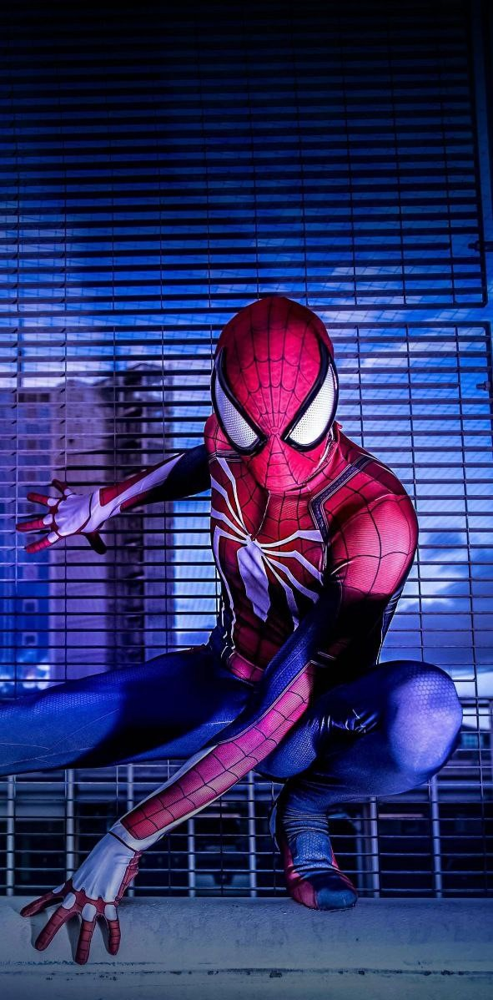
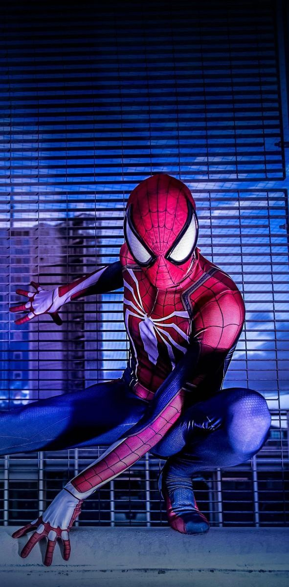

Spider-Man is a superhero appearing in American comic books published by Marvel Comics. Created by writer-editor Stan Lee and artist Steve Ditko, he first appeared in the anthology comic book Amazing Fantasy #15 (August 1962) in the Silver Age of Comic Books. He has been featured in comic books, television shows, films, video games, novels, and plays.
Spider-Man's secret identity is Peter Benjamin Parker, a teenage high school student and an orphan raised by his Aunt May and Uncle Ben in New York City after his parents Richard and Mary Parker died in a plane crash. Lee and Ditko had the character deal with the struggles of adolescence and financial issues and gave him many supporting characters, such as Flash Thompson, J. Jonah Jameson, and Harry Osborn; romantic interests Gwen Stacy, Mary Jane Watson, and the Black Cat; and enemies such as the Green Goblin, Doctor Octopus, and Venom. In his origin story, Spider-Man gets his superhuman spider-powers and abilities after being bitten by a radioactive spider; these include superhuman strength, agility, reflexes, stamina, durability, coordination, and balance, clinging to surfaces and ceilings like a spider, and detecting danger with his precognition ability called "spider-sense". He also builds wrist-mounted "web-shooter" devices that shoot artificial spider-webs of his own design, which are used both for fighting and for web-swinging across the city. Peter Parker originally used his powers for his own personal gain, but after his Uncle Ben was killed by a thief that Peter did not stop, he began to use his powers to fight crime by becoming the superhero known as Spider-Man.
When Spider-Man first appeared in the early 1960s, teenagers in superhero comic books were usually relegated to the role of sidekick to the protagonist. The Spider-Man comic series broke ground by featuring Peter Parker, a high school student from Queens, New York, as Spider-Man's secret identity, whose "self-obsessions with rejection, inadequacy, and loneliness" were issues to which young readers could relate.[8] While Spider-Man had all the makings of a sidekick, unlike previous teen heroes such as Bucky and Robin, Spider-Man had no superhero mentor like Captain America and Batman; he had learned the lesson for himself that "with great power comes great responsibility" — a line included in a text box in the final panel of the first Spider-Man's origin story but later retroactively attributed to the late Uncle Ben Parker.
Marvel has featured Spider-Man in several comic book series, the first and longest-lasting of which is The Amazing Spider-Man. Over the years, the Peter Parker character developed from a shy, nerdy New York City high school student to a troubled but outgoing college student, to a married high school teacher to, in the late 2000s, a single freelance photographer. In the 2000s, he joins the Avengers. Doctor Octopus also took on the identity for a story arc spanning 2012–2014, following a body swap plot in which Peter appears to die.[9] Marvel has also published comic books featuring alternate versions of Spider-Man, including Spider-Man 2099, which features the adventures of Miguel O'Hara, the Spider-Man of the future; Ultimate Spider-Man, which features the adventures of a teenage Peter Parker in the alternate universe; and then Ultimate Comics: Spider-Man, which depicts a teenager named Miles Morales who takes up the mantle of Spider-Man after Ultimate Peter Parker's apparent death. Miles later became a superhero in his own right and was brought into mainstream continuity, where he sometimes works alongside Peter.
Spider-Man is one of the most popular and commercially successful superheroes.[10] He has appeared in countless forms of media, including several animated TV series including the first original animated series Spider-Man with Paul Soles voicing Spider-Man, a live-action television series, syndicated newspaper comic strips, and multiple series of films. Spider-Man was first portrayed in live-action by Danny Seagren in Spidey Super Stories, a recurring skit on The Electric Company from 1974 to 1977.[11] In live-action films, Spider-Man has been portrayed by actors Tobey Maguire in Sam Raimi's Spider-Man trilogy, by Andrew Garfield in two films directed by Marc Webb,[12] and in the Marvel Cinematic Universe by Tom Holland. Reeve Carney starred originally as Spider-Man in the 2010 Broadway musical Spider-Man: Turn Off the Dark.[13] Spider-Man was also been voiced by Jake Johnson and Chris Pine in the animated film Spider-Man: Into the Spider-Verse. Spider-Man has been well-received as a superhero and comic book character, and he is often ranked as one of the most popular and iconic comic book superheroes of all time and one of the most popular characters in all fiction.

 
